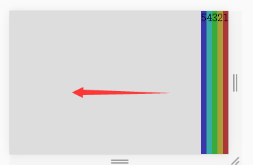
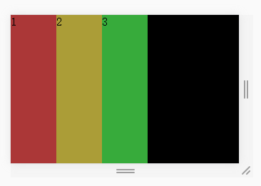
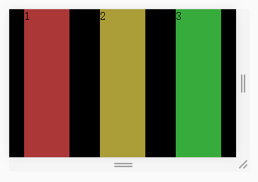
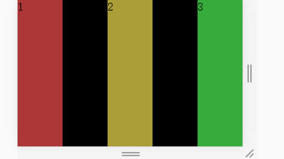
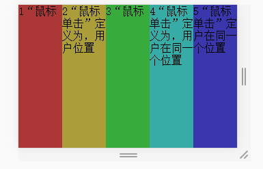
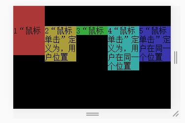
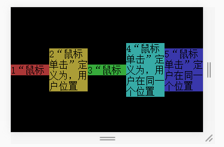
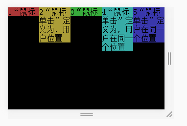
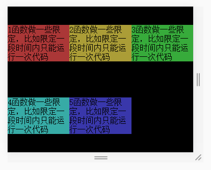
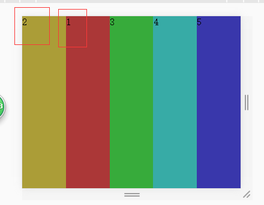

浅谈弹性盒子flex属性和基本用法
小课堂【武汉第83期】
分享人：李兴 | 龚浩
目录
1.背景介绍
2.知识剖析
3.常见问题
4.解决方案
5.编码实战
6.扩展思考
7.参考文献
8.更多讨论
一、背景介绍
二、知识剖析
1、Flex布局是什么？
Flex是Flexible Box的缩写，意为"弹性布局"，用来为盒状模型提供最大的灵活性。 任何一个容器都可以指定为Flex布局,行内元素也可以使用Flex布局。注意，设为Flex布局以后，子元素的float、clear和vertical-align属性将失效。
demo2、基本概念
采用Flex布局的元素，称为Flex容器（flex container），简称"容器"。它的所有子元素自动成为容器成员，称为Flex项目（flex item），简称"项目"。

容器默认存在两根轴：水平的主轴（main axis）和垂直的交叉轴（cross axis）。主轴的开始位置（与边框的交叉点）叫做main start，结束位置叫做main end；交叉轴的开始位置叫做cross start，结束位置叫做cross end。项目默认沿主轴排列。单个项目占据的主轴空间叫做main size，占据的交叉轴空间叫做cross size。
3. 父级属性
- flex:direction 设置主轴方向,确定子元素主轴排列方式
- flex:wrap 主轴宽度不够时是否换行显示
- flex-flow 上2复合属性
- justify-content 主轴上子元素对齐方式
- align-items侧轴子元素对齐方式
- align-content 侧轴上有剩余空间时,侧轴对齐方式
4 .子级属性
- order 子元素排列顺序
- flex-shrink 子元素收缩比率
- flex-grow 子元素扩展比率
- flex-basis flex-basis属性定义了在分配多余空间之前，项目占据的主轴空间（main size）。浏览器根据这个属性，计算主轴是否有多余空间。它的默认值为auto，即项目的本来大小。
- flex 上3简写,复合属性
- align-self 允许独立的弹性子元素覆盖弹性容器的默认的侧轴对齐方式(align-items)
5. 属性详解
flex-direction
row默认值,水平方向左至右

row-reverse水平方向右至左
column垂直方向,上至下排列

ccolumn-reverse垂直方向,下至上排列

demo1
flex-wrap
nowrap默认值,不换行

wrap换行显示

wrap-reverse逆序换行显示

demo1
justify-content
center居中对齐

flex-end侧轴结束对齐

flex-start侧轴开始对齐
space-around均匀分布
space-between两端对齐
demo1
align-items
stretch默认值,充满侧轴
baseline项目的第一行文字的基线对齐
center侧轴居中对齐
flex-end侧轴结束对齐

flex-start侧轴开始对齐
demo1
align-content
stretch默认值,充满侧轴

center侧轴居中对齐

flex-start侧轴开始对齐

flex-end侧轴结束对齐

space-between侧轴两端对齐

space-around侧轴均匀分布
demo1
order子元素排列顺序
设置的值越小越靠前
demo1
flex-grow子元素扩展比例
剩余宽度 * 占比值/总比值

盒子1设置flex-grow:1的时候单独分配剩下的所有空间

demo1
flex-shrink子元素收缩比例,默认值为1平均分配
溢出宽度 * 占比值/总比值
父级宽度为300px,子级为100px,收缩后宽度为300*1/4=75px

demo1
flex-basis
属性定义了在分配多余空间之前，项目占据的主轴空间（main size）。浏览器根据这个属性，计算主轴是否有多余空间。它的默认值为auto，即项目的本来大小。demo1
align-self
align-self属性允许单个项目有与其他项目不一样的对齐方式，可覆盖align-items属性。默认值为auto，表示继承父元素的align-items属性，如果没有父元素，则等同于stretch。demo1
三、常见问题
四、解决方案
设置width:100%;且overflow:hidden;
demo2五、编码实战
2016百度前端学院有一个flex布局练习题

六、拓展思考
flex布局可以应用到那些场景？
一般实现垂直居中是一件很麻烦的事，但flex布局轻松解决
display:flex;
justify-content: center;
align-items: center;
另外响应式布局应用flex布局也相当方便
flex兼容性写法
由于flex布局提出时间晚，且经过多次改变，所以需要用兼容写法以兼容更多版本的浏览器，当然各大主流浏览器最新版本现已不需要兼容写法
父元素兼容写法
display: -webkit-box; /* 老版本语法: Safari, iOS, Android browser, older WebKit browsers. */
display: -moz-box; /* 老版本语法: Firefox (buggy) */
display: -ms-flexbox; /* 混合版本语法: IE 10 */
display: -webkit-flex; /* 新版本语法: Chrome 21+ */
display: flex; /* 新版本语法: Opera 12.1, Firefox 22+ */
子元素兼容写法
-webkit-box-flex: 1 /* OLD - iOS 6-, Safari 3.1-6 */
-moz-box-flex: 1; /* OLD - Firefox 19- */
-webkit-flex: 1; /* Chrome */
-ms-flex: 1 /* IE 10 */
flex: 1; /* NEW, Spec - Opera 12.1, Firefox 20+ */
七、参考文献
flex实例--阮一峰的个人博客
css之flex兼容
更多讨论
bootstrap与flex布局
bootstarp4的flexbox感谢观看
by 李兴|黄雄|龚浩